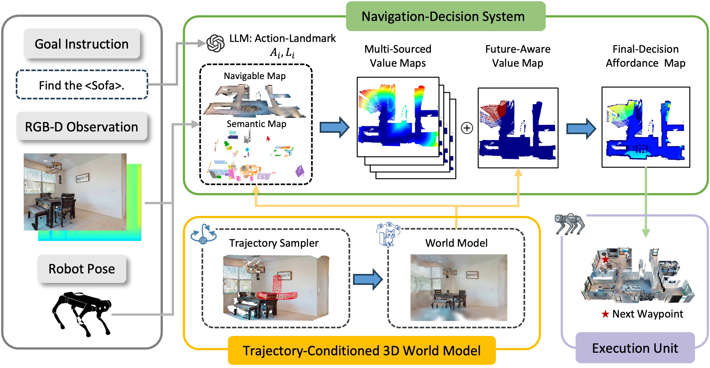
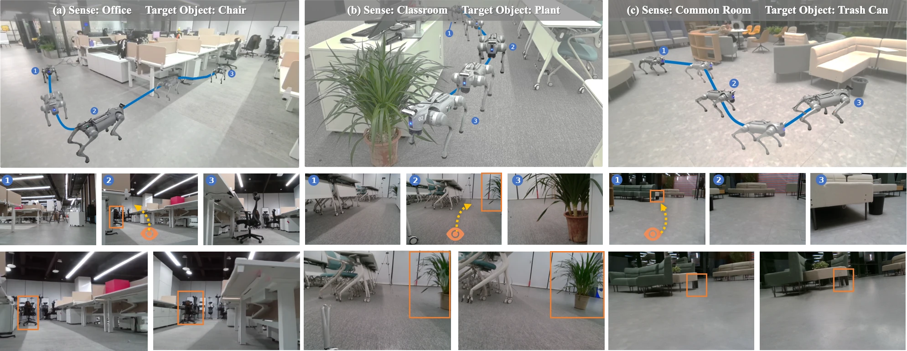

Schrödinger's Navigator performs zero-shot object navigation by generating three complementary, trajectory-conditioned 3D futures from left, right, and overhead virtual camera viewpoints. Their imagined cues are depth-aligned and combined in a Future-Aware Value Map (FAVM), complementing observed guidance with semantic target relevance, new free-space coverage, and geometric risk. The selected navigation target is executed by a local planner rather than by following imagined camera paths.
Zero-shot object navigation (ZSON) requires robots to locate target objects in unseen environments without task-specific fine-tuning or pre-built maps. Severe occlusion and hidden risks can make single-scene reasoning brittle.
Our method samples left-bypass, right-bypass, and over-the-top virtual camera trajectories around a dominant occluder. FlashWorld generates hypothetical 3D Gaussian Splatting scenes conditioned on these trajectories; depth alignment and semantic transfer enable their evidence to be fused into a Future-Aware Value Map (FAVM).
The FAVM scores semantic target relevance, newly imagined free-space coverage, and geometric risk, then combines future guidance with observation-based navigation cues. The paper evaluates HM3D ObjectNav and controlled Unitree Go2 trials, showing comparable static-search performance and a clearer advantage under severe occlusion.
Using observed RGB-D geometry, the sampler constructs three complementary virtual camera paths around the dominant forward occluder: left, right, and overhead. These are used for imagination, not robot-executed motion.
FlashWorld generates trajectory-conditioned 3D Gaussian Splatting scenes from the current observation. The predictions are scale-aligned using observed depth and fused as hypotheses of currently unseen space.
The FAVM combines target semantics, newly imagined free space, and geometric path-risk penalties, and is fused with observation-based guidance. A local planner converts the selected navigation target into executable waypoints; risk-aware ranking does not provide a formal safety guarantee.
The supplementary video presents occlusion-heavy HM3D rollouts and real-world Unitree Go2 demonstrations in the Office, Classroom, and Common Room. The reported real-world benchmark focuses on static object search and severe static occlusion, rather than a dynamic-obstacle benchmark.

The pipeline receives a goal instruction, RGB-D observation, robot pose, and an accumulated map. An occluder-aware sampler generates three virtual camera trajectories (L/R/U), and a trajectory-conditioned 3D world model produces hypothetical 3D scenes, which are spatially aligned and semantically labeled before map fusion.
The FAVM combines semantic relevance, exploration, and geometric risk, and is fused with a normalized observation-based value map for target selection. The local planner computes executable waypoints from that navigation target. In HM3D, future imagination is refreshed every 50 observation updates; on the real robot, world-model inference is asynchronous.
The results below match the CoRL 2026 camera-ready manuscript, rather than the older arXiv PDF. HM3D simulation compares against task-trained, zero-shot, and imagination-based navigation baselines. The Unitree Go2 study is a controlled comparison with an InstructNav-style baseline across three indoor scenes, with 30 trials per setting.
Static object search
vs. 22/30 InstructNav-style baseline
Occlusion-heavy trials
vs. 11/30 InstructNav-style baseline
HM3D success rate
vs. 0.625 ImagineNav++
HM3D distance to goal
SPL 0.311 (second-highest)

The manuscript illustrates three real-world scenarios: Office (Chair), Classroom (Plant), and Common Room (Trash Can).
The real-robot system is built on a Unitree Go2 with a RealSense D435i RGB-D camera. The benchmark spans Office, Classroom, and Common Room, and evaluates two conditions: standard static object search and scenarios with unknown risks.
| Scene | Office | Classroom | Common Room | All |
|---|---|---|---|---|
| Search for static objects | ||||
| InstructNav | 7/10 | 7/10 | 8/10 | 22/30 |
| Ours | 8/10 | 8/10 | 7/10 | 23/30 |
| Scenarios with Unknown Risks | ||||
| InstructNav | 4/10 | 3/10 | 4/10 | 11/30 |
| Ours | 5/10 | 6/10 | 6/10 | 17/30 |
On HM3D ObjectNav, our method obtains SR 0.682, SPL 0.311, and DTG 1.84 m: the highest reported SR, lowest reported DTG, and second-highest SPL among the compared methods.
| Method | Training Free | HM3D | ||
|---|---|---|---|---|
| SR↑ | SPL↑ | DTG↓ | ||
| ZSON | ✗ | 0.255 | 0.126 | -- |
| PixNav | ✗ | 0.379 | 0.205 | -- |
| SPNet | ✗ | 0.312 | 0.101 | -- |
| SGM | ✗ | 0.602 | 0.308 | -- |
| ESC | ✓ | 0.392 | 0.223 | -- |
| VLFM | ✓ | 0.525 | 0.304 | -- |
| VoroNav | ✓ | 0.420 | 0.260 | -- |
| L3MVN | ✓ | 0.504 | 0.231 | 4.43 |
| TriHelper | ✓ | 0.565 | 0.253 | 3.87 |
| GAMap | ✓ | 0.531 | 0.260 | -- |
| InstructNav | ✓ | 0.510 | 0.187 | 2.89 |
| ImagineNav | ✓ | 0.530 | 0.238 | -- |
| ImagineNav++ | ✓ | 0.625 | 0.328 | -- |
| BeliefMapNav | ✓ | 0.614 | 0.306 | -- |
| Ours | ✓ | 0.682 | 0.311 | 1.84 |
Breakdown from Appendix E of the camera-ready manuscript. ΔSR is Ours minus ImagineNav++.
| Occlusion | ImagineNav++ SR | Ours SR | ΔSR |
|---|---|---|---|
| Low | 0.682 | 0.720 | +0.038 |
| Medium | 0.629 | 0.674 | +0.045 |
| High | 0.564 | 0.652 | +0.088 |
The advantage over ImagineNav++ grows from 3.8 to 8.8 percentage points as occlusion severity increases.
Camera-ready manuscript ablations. The full model uses three imagined trajectories and observation/future fusion β = 0.4.
| Variant | SR ↑ | Triggers / Ep. | Latency / Trigger (s) | Wait Ratio (%) | Waypoint Change (%) |
|---|---|---|---|---|---|
| No imagination | 0.553 | 0.00 | — | 0.0 | — |
| Single trajectory (N=1) | 0.594 | 4.31 | 3.0 | 7.2 | 28.4 |
| Dense sampling (N=5) | 0.622 | 4.18 | 15.0 | 30.8 | 51.6 |
| Imagination-heavy (β=0.2) | 0.497 | 4.36 | 9.0 | 22.9 | 67.2 |
| Observation-heavy (β=0.6) | 0.595 | 4.28 | 9.0 | 19.9 | 35.3 |
| FAVM without exploration E(p) | 0.629 | 4.20 | 9.0 | 19.8 | 40.8 |
| FAVM without semantic S(p) | 0.605 | 4.27 | 9.0 | 20.5 | 38.4 |
| FAVM without risk R(p) | 0.634 | 4.19 | 9.0 | 19.3 | 42.1 |
| Ours (N=3, β=0.4) | 0.682 | 4.24 | 9.0 | 20.1 | 46.8 |
Waypoint Change is the fraction of navigation decisions selecting a different waypoint than the observation-only map. These results characterize trade-offs, not formal safety guarantees.
@misc{he2026schrodingersnavigatorimaginingensemble,
title = {Schr\"odinger's Navigator: Imagining an Ensemble of Futures for Zero-Shot Object Navigation},
author = {Yu He and Da Huang and Zhenyang Liu and Zixiao Gu and Qiang Sun and Guangnan Ye and Yanwei Fu and Yu-Gang Jiang},
year = {2026},
eprint = {2512.21201},
archivePrefix= {arXiv},
primaryClass = {cs.RO},
url = {https://arxiv.org/abs/2512.21201}
}